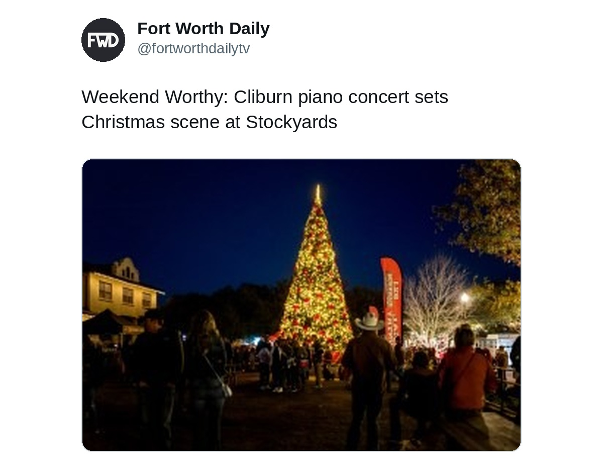
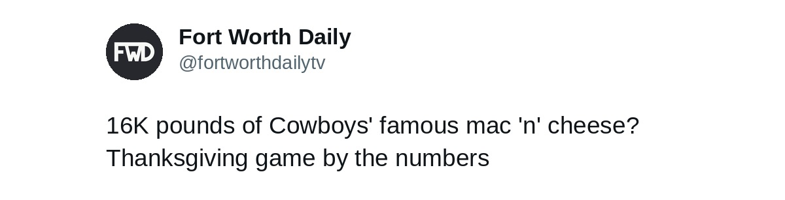
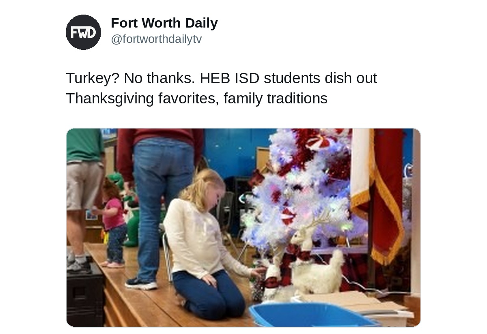

Nothing like the delicious smell of turkey roasting in the oven to remind me: Happy Thanksgiving! Although Thanksgiving isn’t over, some Fort Worth businesses are already jingling bells to welcome Christmas.
Get into the holiday spirit early this weekend with festivities that range from piano concerts to carved ice displays inspired by the wizarding world of Harry Potter. Also, this week’s coverage of the arts was defined by one word: lights.

👍 ❤️ 😮 ✅ written to disk (dry run)
story + scoring
{
"source": "Fort Worth Report",
"kind": "rss",
"score": 1.4504,
"relevance": 2,
"url": "https://fortworthreport.org/2026/11/26/weekend-worthy-cliburn-piano-concert-sets-christmas-scene-at-stockyards/",
"image_license": "cc-by-nd",
"image_credit": "Photo: Cristian ArguetaSoto | Fort Worth Report (CC BY-ND)"
}The Dallas Cowboys shared just how much food they go through on Thanksgiving game day to feed over 90,000 fans.

👍 ❤️ 😮 ✅ written to disk (dry run)
story + scoring
{
"source": "WFAA Sports",
"kind": "rss",
"score": 0.9942,
"relevance": 2,
"url": "https://www.wfaa.com/article/sports/nfl/cowboys/dallas-cowboys-thanksgiving-food-menu/287-d4fe63d4-ba8a-4a6e-b350-4f4561498661",
"image_license": "card",
"image_credit": "Card: FWD"
}At Meadow Creek Elementary’s Generations Day, students shared favorite foods, treasured traditions and gratitude for loved ones. Max McGee has a Thanksgiving menu that would make Charlie Brown proud.
“Because it’s fun and it tastes good,” Max said. Max was one of hundreds of Hurst-Euless-Bedford ISD students who welcomed parents, grandparents and other loved ones for Meadow Creek’s annual Generations Day on Nov. 20.

👍 ❤️ 😮 ✅ written to disk (dry run)
story + scoring
{
"source": "Fort Worth Report",
"kind": "rss",
"score": 0.1057,
"relevance": 0,
"url": "https://fortworthreport.org/2026/11/25/turkey-no-thanks-heb-isd-students-dish-out-thanksgiving-favorites-family-traditions/",
"image_license": "cc-by-nd",
"image_credit": "Photo: Haley Walton | Fort Worth Report (CC BY-ND)"
}